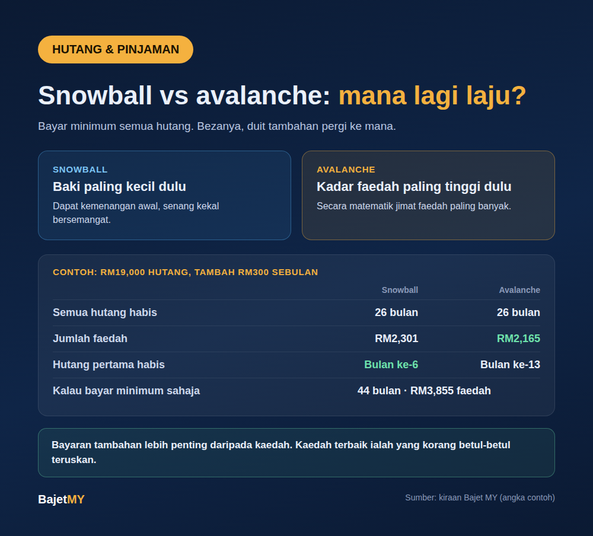

Kalau korang ada lebih daripada satu hutang, soalan biasa ialah: bayar yang mana dulu? Ada dua kaedah yang paling kerap disebut, snowball dan avalanche. Dua-duanya bagus. Bezanya kecil, tapi bukan kosong.

Dua kaedah, ringkasnya
Dalam kedua-dua kaedah, korang tetap bayar bayaran minimum semua hutang. Bezanya hanya pada ke mana duit tambahan pergi.
| Kaedah | Duit tambahan pergi ke | Kelebihan |
|---|---|---|
| Snowball | Hutang dengan baki paling kecil dulu | Dapat "kemenangan" awal, memudahkan kekal bersemangat |
| Avalanche | Hutang dengan kadar faedah paling tinggi dulu | Secara matematik, jimat faedah paling banyak |
Bila satu hutang habis, bayaran yang dibebaskan itu dipindahkan ke hutang seterusnya. Itulah kenapa dipanggil "snowball" dan "avalanche": bayaran makin besar bila bergolek.
Contoh kiraan
Andaikan tiga hutang (angka contoh, bukan data sebenar sesiapa):
| Hutang | Baki | Kadar setahun | Bayaran minimum |
|---|---|---|---|
| Kad kredit A | RM5,000 | 18% | RM150 |
| Pinjaman peribadi | RM12,000 | 9% | RM400 |
| Kad kredit B | RM2,000 | 15% | RM100 |
| Jumlah | RM19,000 | RM650 |
Kalau bayar minimum sahaja: semua hutang habis dalam kira-kira 44 bulan, dengan jumlah faedah sekitar RM3,855.
Kalau tambah RM300 sebulan (jumlah RM950):
| Snowball | Avalanche | |
|---|---|---|
| Semua hutang habis | 26 bulan | 26 bulan |
| Jumlah faedah | RM2,301 | RM2,165 |
| Hutang pertama habis | Bulan ke-6 | Bulan ke-13 |
Perhatikan tiga benda:
- Dua-dua kaedah menjimatkan lebih RM1,500 faedah berbanding bayar minimum sahaja (RM1,554 untuk snowball, RM1,690 untuk avalanche).
- Avalanche jimat RM136 lebih daripada snowball dalam contoh ni.
- Snowball habiskan hutang pertama dalam 6 bulan, avalanche ambil 13 bulan. Kalau korang perlukan rasa "progress" untuk kekal konsisten, ini bukan perkara kecil.
Perbezaan antara kaedah dalam contoh ni kecil. Perbezaan antara bayar tambahan dan tak bayar tambahan jauh lebih besar.
Yang paling penting: jumlah bayaran tambahan
Untuk satu hutang pun, kesannya ketara. Ambil kad kredit A saja (RM5,000 pada 18%):
| Bayaran bulanan | Tempoh | Jumlah faedah |
|---|---|---|
| RM150 | 47 bulan | RM1,984 |
| RM450 | 13 bulan | RM511 |
Naikkan bayaran, tempoh dan faedah turun mendadak. Guna kalkulator bayar hutang Bajet MY untuk lihat kesan bayaran tambahan pada hutang korang sendiri.
Mana satu patut pilih?
Tak ada jawapan tunggal. Cara senang:
- Pilih avalanche kalau korang disiplin dan nak jimat faedah paling banyak, terutamanya bila ada hutang kadar sangat tinggi seperti kad kredit.
- Pilih snowball kalau korang pernah mula dan berhenti sebab rasa tak ke mana. Kemenangan awal membantu.
- Kaedah terbaik ialah yang korang betul-betul teruskan. Kaedah sempurna yang ditinggalkan selepas tiga bulan kalah dengan kaedah biasa yang disiapkan.
Sebelum mula
- Senaraikan semua hutang: baki, kadar faedah dan bayaran minimum.
- Jangan tinggalkan bayaran minimum mana-mana hutang, kerana lewat bayar ada caj dan menjejaskan rekod CCRIS.
- Tentukan jumlah tambahan yang realistik setiap bulan, walaupun RM100.
- Elak tambah hutang baharu semasa membayar, terutamanya instalmen 0% atau kad kredit.
- Simpan sedikit dana kecemasan supaya tak terpaksa berhutang semula bila ada kecemasan.
Sumber
- Semua angka dalam contoh dikira oleh Bajet MY berdasarkan andaian yang dinyatakan; ia bukan data sebenar atau nasihat kewangan peribadi.